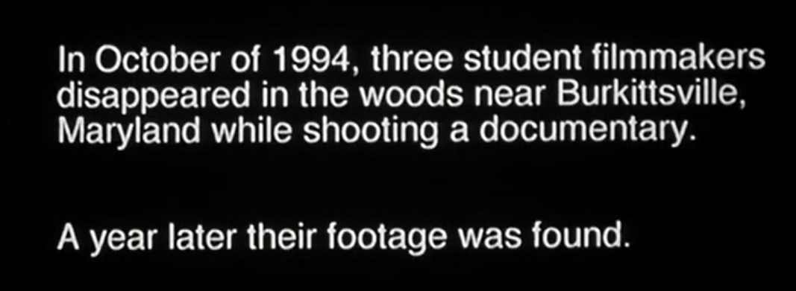
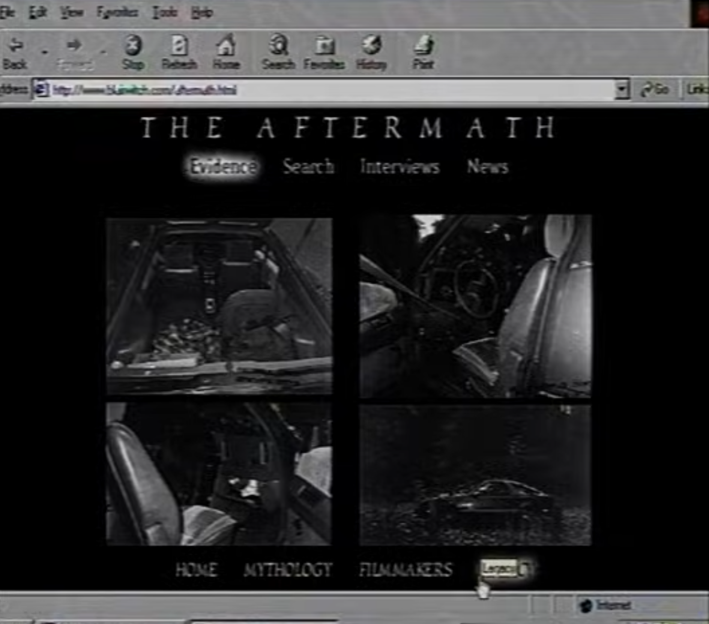
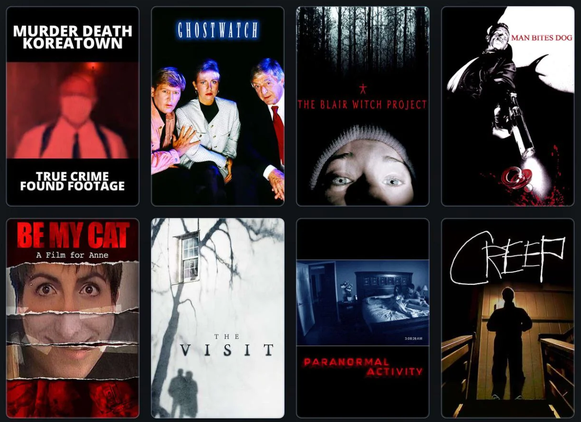

<!DOCTYPE html>
<html>
    <head>
        <meta charset="utf-8" />
        <title>marketing</title>
        <link rel="stylesheet" href="style.css">
    </head>
    <body>
        <div class="js-container"></div>
    
        <script src="https://unpkg.com/supersimpledev/react.js"></script>
        <script src="https://unpkg.com/supersimpledev/react-dom.js"></script>
        <script src="common.jsx" type="text/babel"></script>
        <script src="https://unpkg.com/supersimpledev/babel.js"></script>
        <script type="text/babel">
            const title = <h4 class='title'>Censorship</h4>
            
            const test = createHeader("marketing", "censorship")
            
            const nosferatu = (
                <div class="message-image-content"> 
                    
                    <p><em>The Blair Witch Project's iconic opening screen</em></p>
                </div>
            )

            const cannibal = (
                <div class="message-image-content"> 
                    
                    <p><em>A screenshot of the (now unfortunately defunct) viral website</em></p>
                </div>
            )

            const found_footage = (
                <div class="message-image-content"> 
                    
                    <p><em>The Blair Witch Project among other notable found-footage films since, most of which remain in obscurity</em></p>
                </div>
            )
            
            const intro = (
                <p class="message-box-floating">
                    One may assume that the immense success of <em>The Blair Witch Project</em> was due to its incredible ability to blur the line between fact and fiction. Although it undeniably accomplished this, its success was also attributed to a far more nuanced web of paratexts, filmmaking decisions, and external marketing efforts to conjure an irreplicable horror-film phenomenon.
                </p>
            )

            const paragraph_1 = (
                <p class="message-box">
                    As noted previously, <em>The Blair Witch Project</em> bears significant resemblance to <em>Cannibal Holocaust</em>, as a similar low-budget, found-footage film. Despite the eventual popularisation of the genre, upon <em>Cannibal Holocaust</em>’s 1980 release, the novelty of the format was greatly overshadowed with its “offensive, dishonest, and above all, inhuman” subject matter (Neil 1). Furthermore, verisimilitude was used as a marketing tactic as far back as 1740 with Samuel Richardson’s novel <em>Pamela</em>, a collection of familial letters exchanged between two fictional characters. Indeed, Richardson “recieve[d] letters asking whether the story was indeed factual” long after its release, similar to the “30 to 40 calls a day about [<em>The Blair Witch Project</em>]” received by the county’s sheriff. Furthermore, similar to Richardson’s “Preface by the Editor” that explains his decision to “vary some of the Names of Persons, Places, [and] a few of the Circumstances” for privacy, <em>The Blair Witch Project</em> begins with a similar assertion of verity.  (Harris 81; 82)
                </p>
            )

            const paragraph_2 = (
                <p class="message-box-floating">
                Outside of the deceptive filmmaking techniques and stylistic decisions, another significant factor was <em>The Blair Witch Project</em>’s marketing. J. P. Telotte notes that each new release at the time “operate[d] within a complex web of information sites: radio spots, theatrical trailers, various sorts of television promotions, billboards, product tie-ins, and … the Internet ” (Telotte 32). There were certainly aberrant strategies employed, but “most accounts of the film’s promotion overlook the extent of its conventional marketing”, which included “television advertising”, ads in college papers, and even trailers “tied to playdates for <em>Star Wars: Episode One</em>” (33), all within the film’s $20 million marketing campaign. It’s worth highlighting these factors as the film’s success is commonly attributed solely to its online marketing campaign which, despite being massively influential, was only a small piece in the campaign’s paratextual web.
                </p>
            )

            const paragraph_3 = (
                <p class="message-box">
                    The spectacle of <em>The Blair Witch Project</em> was perhaps not established on the Internet, but it certainly grew exponentially once it found its audience. The official website, created by film co-directors Eduardo Sacnhez and Daniel Myrick, became “among the top fifty most used sites on the entire Internet” (Harris 79). The Internet was not yet at maturity, and most marketing efforts struggled to differentiate themselves from their physical counterparts, typically presenting as “advertisements with little animation” (Telotte 34). Instead of functioning as accompanying material, <em>The Blair Witch Project</em>’s website became “a medium of the mythology”, transforming <em>The Blair Witch Project</em> film into a hypertext that contributes to the greater <em>Blair Witch</em> lore. The website offered an “investigative” experience that “treated [<em>The Blair Witch Project</em>] as if it were real” (Kermode 10:11). It featured various news articles on the missing students, photographs of their remaining evidence, and fictional police reports and interviews detailing the search efforts.
                </p>
            )

            const paragraph_4 = (
                <p class="message-box">
                    The constructed online rabbit-holes that prospective viewers fell into were legitimised by the film’s overwhelmingly positive critical and audience reception. Roger Ebert’s review labelled it as an “extraordinarily effective horror film” and bestowed a 4/4 rating (Ebert). However, as effective as <em>The Blair Witch Project</em>’s marketing was, and as laudable of a film it may be, its popularisation immediately saturated the found-footage genre and ensured its success was entirely irreplicable. The naivety of the early Internet perfectly complemented the terrifyingly realistic missing-person narrative. But, once the audience saw the film and gradually realised that the <em>Blair Witch</em> was but a cleverly constructed hoax, they wisened up and no similar marketing campaign has been able to reconstruct even a fraction of <em>The Blair Witch Project</em> frenzy since. Later found-footage films such as <em>Paranormal Activity</em> and <em>Creep</em> garnered praise for their miniscule budgets, but neither even attempted to suggest their films were real.
                </p>
            )

            const app = (
                <>
                    {test}
                    <div class="message-board">
                        {intro}
                        <div class="message-row">
                            {nosferatu}
                            {paragraph_1}
                        </div>
                        {paragraph_2}
                        <div class="message-row">
                            {paragraph_3}
                            {cannibal}
                        </div>
                        <div class="message-row">
                            {found_footage}
                            {paragraph_4}
                        </div>
                    </div>
                </>
            )

            const container = document.querySelector('.js-container')
            const root = ReactDOM.createRoot(container)
            root.render(app)
        </script>
    </body>
</html>